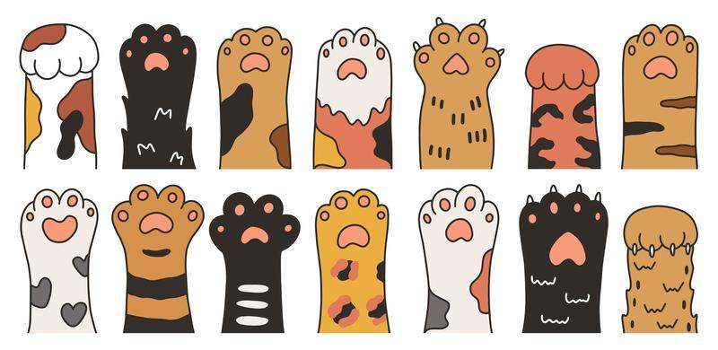

Nosso Propósito
Nosso objetivo sempre foi voltado a oferecer abrigo, cuidado, carinho e dignidade para aqueles que não podem pedir por ajuda.
Quem Somos
Desde 2020, na cidade de Araraquara, a ONG Patinhas já resgatou mais de 50 mil animais em situação de abandono. E essa jornada está só começando!
Fale Conosco
Email: contato@ongpatinhas.org
Telefone: (16) 9090-9998